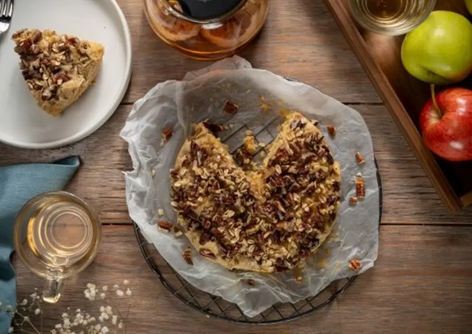

RECETA DE PAN DE MANZANA Y CANELA
Compartida por Coco Vázquez
timer
person
Ingredientes
- ½ taza de mantequilla
- ⅔ taza de azúcar
- 2 huevos
- 1 ½ tazas de harina
- 1 ½ cucharaditas de polvo para hornear
- ¼ taza de leche
- 1 ½ cucharaditas de canela en polvo
- 2 manzanas, sin cáscara, en cubos
- 1 taza de nuez, troceada y picada
- ¼ taza de avena, tostada
Procedimiento
- Acrema la mantequilla y el azúcar con el aditamento de globo de la batidora.
- Agrega los huevos uno por uno, la harina, polvo para hornear, la leche y la canela en polvo.
- Una vez integrado, agrega las manzanas y mezcla hasta integrar.
- Vierte la mezcla en un molde con papel encerado, añade las nueces y la avena y tapa con papel aluminio.
- Coloca una rejilla en una vaporera lo suficientemente ancha, pon el pastel encima y cocina a fuego medio por 45 minutos.
